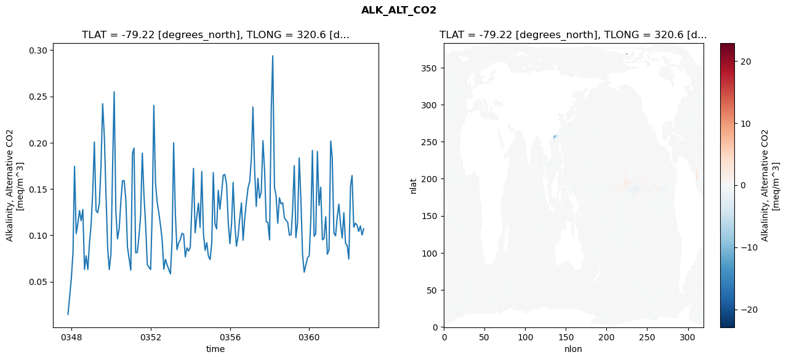
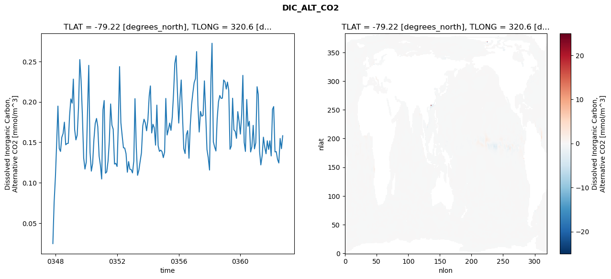
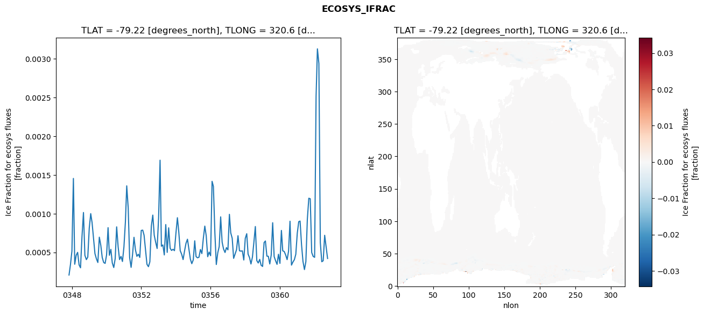
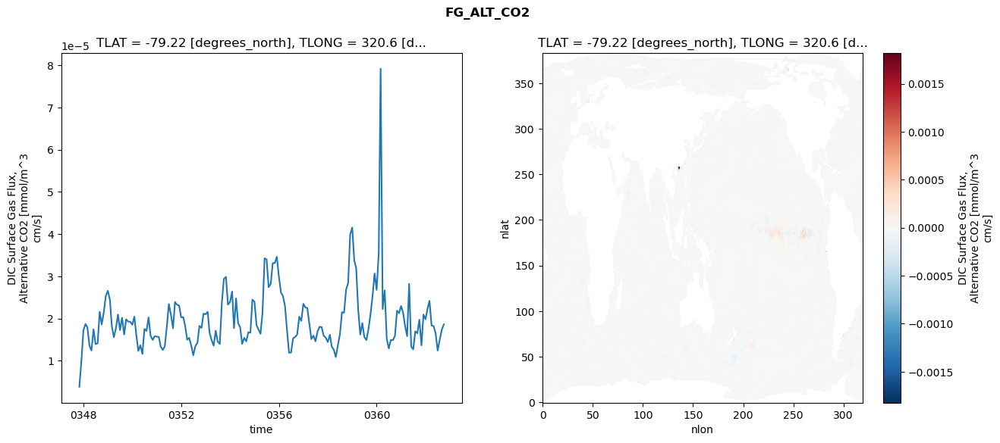

glb-dor_North_Atlantic_basin_024_1999-10-01_00099#
Simulation details#
Case: smyle.cdr-atlas-v0.glb-dor_North_Atlantic_basin_024_1999-10-01_00099.001
Basin: North_Atlantic_basin
Polygon: 24.0
Start date: 1999-10
Show code cell source Hide code cell source
import xarray as xr
import matplotlib.pyplot as plt
Show code cell source Hide code cell source
zarr_store = "/path/to/zarr/store"
# Parameters
zarr_store = "/global/cfs/projectdirs/m4746/Projects/Ocean-CDR-Atlas-v0/data/validation/smyle.cdr-atlas-v0.glb-dor_North_Atlantic_basin_024_1999-10-01_00099.001.validation.zarr"
Show code cell source Hide code cell source
%%time
ds_o = xr.open_zarr(zarr_store).compute()
ds_o
CPU times: user 613 ms, sys: 470 ms, total: 1.08 s
Wall time: 1.43 s
<xarray.Dataset> Size: 2MB
Dimensions: (nlat: 384, nlon: 320, time: 180)
Coordinates:
TLAT float64 8B -79.22
TLONG float64 8B 320.6
ULAT float64 8B -78.95
ULONG float64 8B 321.1
* time (time) object 1kB 0347-11-01 00:00:00 ... 0362-10-01 0...
z_t float32 4B 500.0
Dimensions without coordinates: nlat, nlon
Data variables:
ALK_ALT_CO2_diff (nlat, nlon) float32 492kB nan nan nan ... nan nan nan
ALK_ALT_CO2_rmse (time) float64 1kB 0.01472 0.03414 ... 0.1003 0.1071
DIC_ALT_CO2_diff (nlat, nlon) float32 492kB nan nan nan ... nan nan nan
DIC_ALT_CO2_rmse (time) float64 1kB 0.02486 0.07605 ... 0.1422 0.1582
ECOSYS_IFRAC_diff (nlat, nlon) float32 492kB nan nan nan ... nan nan nan
ECOSYS_IFRAC_rmse (time) float64 1kB 0.0002078 0.000342 ... 0.0004211
FG_ALT_CO2_diff (nlat, nlon) float32 492kB nan nan nan ... nan nan nan
FG_ALT_CO2_rmse (time) float64 1kB 3.814e-06 9.768e-06 ... 1.859e-05xarray.Dataset
- nlat: 384
- nlon: 320
- time: 180
- TLAT()float64-79.22
- long_name :
- array of t-grid latitudes
- units :
- degrees_north
array(-79.22052261)
- TLONG()float64320.6
- long_name :
- array of t-grid longitudes
- units :
- degrees_east
array(320.56250892)
- ULAT()float64-78.95
- long_name :
- array of u-grid latitudes
- units :
- degrees_north
array(-78.95289509)
- ULONG()float64321.1
- long_name :
- array of u-grid longitudes
- units :
- degrees_east
array(321.12500894)
- time(time)object0347-11-01 00:00:00 ... 0362-10-...
- bounds :
- time_bound
- long_name :
- time
array([cftime.DatetimeNoLeap(347, 11, 1, 0, 0, 0, 0, has_year_zero=True), cftime.DatetimeNoLeap(347, 12, 1, 0, 0, 0, 0, has_year_zero=True), cftime.DatetimeNoLeap(348, 1, 1, 0, 0, 0, 0, has_year_zero=True), cftime.DatetimeNoLeap(348, 2, 1, 0, 0, 0, 0, has_year_zero=True), cftime.DatetimeNoLeap(348, 3, 1, 0, 0, 0, 0, has_year_zero=True), cftime.DatetimeNoLeap(348, 4, 1, 0, 0, 0, 0, has_year_zero=True), cftime.DatetimeNoLeap(348, 5, 1, 0, 0, 0, 0, has_year_zero=True), cftime.DatetimeNoLeap(348, 6, 1, 0, 0, 0, 0, has_year_zero=True), cftime.DatetimeNoLeap(348, 7, 1, 0, 0, 0, 0, has_year_zero=True), cftime.DatetimeNoLeap(348, 8, 1, 0, 0, 0, 0, has_year_zero=True), cftime.DatetimeNoLeap(348, 9, 1, 0, 0, 0, 0, has_year_zero=True), cftime.DatetimeNoLeap(348, 10, 1, 0, 0, 0, 0, has_year_zero=True), cftime.DatetimeNoLeap(348, 11, 1, 0, 0, 0, 0, has_year_zero=True), cftime.DatetimeNoLeap(348, 12, 1, 0, 0, 0, 0, has_year_zero=True), cftime.DatetimeNoLeap(349, 1, 1, 0, 0, 0, 0, has_year_zero=True), cftime.DatetimeNoLeap(349, 2, 1, 0, 0, 0, 0, has_year_zero=True), cftime.DatetimeNoLeap(349, 3, 1, 0, 0, 0, 0, has_year_zero=True), cftime.DatetimeNoLeap(349, 4, 1, 0, 0, 0, 0, has_year_zero=True), cftime.DatetimeNoLeap(349, 5, 1, 0, 0, 0, 0, has_year_zero=True), cftime.DatetimeNoLeap(349, 6, 1, 0, 0, 0, 0, has_year_zero=True), cftime.DatetimeNoLeap(349, 7, 1, 0, 0, 0, 0, has_year_zero=True), cftime.DatetimeNoLeap(349, 8, 1, 0, 0, 0, 0, has_year_zero=True), cftime.DatetimeNoLeap(349, 9, 1, 0, 0, 0, 0, has_year_zero=True), cftime.DatetimeNoLeap(349, 10, 1, 0, 0, 0, 0, has_year_zero=True), cftime.DatetimeNoLeap(349, 11, 1, 0, 0, 0, 0, has_year_zero=True), cftime.DatetimeNoLeap(349, 12, 1, 0, 0, 0, 0, has_year_zero=True), cftime.DatetimeNoLeap(350, 1, 1, 0, 0, 0, 0, has_year_zero=True), cftime.DatetimeNoLeap(350, 2, 1, 0, 0, 0, 0, has_year_zero=True), cftime.DatetimeNoLeap(350, 3, 1, 0, 0, 0, 0, has_year_zero=True), cftime.DatetimeNoLeap(350, 4, 1, 0, 0, 0, 0, has_year_zero=True), cftime.DatetimeNoLeap(350, 5, 1, 0, 0, 0, 0, has_year_zero=True), cftime.DatetimeNoLeap(350, 6, 1, 0, 0, 0, 0, has_year_zero=True), cftime.DatetimeNoLeap(350, 7, 1, 0, 0, 0, 0, has_year_zero=True), cftime.DatetimeNoLeap(350, 8, 1, 0, 0, 0, 0, has_year_zero=True), cftime.DatetimeNoLeap(350, 9, 1, 0, 0, 0, 0, has_year_zero=True), cftime.DatetimeNoLeap(350, 10, 1, 0, 0, 0, 0, has_year_zero=True), cftime.DatetimeNoLeap(350, 11, 1, 0, 0, 0, 0, has_year_zero=True), cftime.DatetimeNoLeap(350, 12, 1, 0, 0, 0, 0, has_year_zero=True), cftime.DatetimeNoLeap(351, 1, 1, 0, 0, 0, 0, has_year_zero=True), cftime.DatetimeNoLeap(351, 2, 1, 0, 0, 0, 0, has_year_zero=True), cftime.DatetimeNoLeap(351, 3, 1, 0, 0, 0, 0, has_year_zero=True), cftime.DatetimeNoLeap(351, 4, 1, 0, 0, 0, 0, has_year_zero=True), cftime.DatetimeNoLeap(351, 5, 1, 0, 0, 0, 0, has_year_zero=True), cftime.DatetimeNoLeap(351, 6, 1, 0, 0, 0, 0, has_year_zero=True), cftime.DatetimeNoLeap(351, 7, 1, 0, 0, 0, 0, has_year_zero=True), cftime.DatetimeNoLeap(351, 8, 1, 0, 0, 0, 0, has_year_zero=True), cftime.DatetimeNoLeap(351, 9, 1, 0, 0, 0, 0, has_year_zero=True), cftime.DatetimeNoLeap(351, 10, 1, 0, 0, 0, 0, has_year_zero=True), cftime.DatetimeNoLeap(351, 11, 1, 0, 0, 0, 0, has_year_zero=True), cftime.DatetimeNoLeap(351, 12, 1, 0, 0, 0, 0, has_year_zero=True), cftime.DatetimeNoLeap(352, 1, 1, 0, 0, 0, 0, has_year_zero=True), cftime.DatetimeNoLeap(352, 2, 1, 0, 0, 0, 0, has_year_zero=True), cftime.DatetimeNoLeap(352, 3, 1, 0, 0, 0, 0, has_year_zero=True), cftime.DatetimeNoLeap(352, 4, 1, 0, 0, 0, 0, has_year_zero=True), cftime.DatetimeNoLeap(352, 5, 1, 0, 0, 0, 0, has_year_zero=True), cftime.DatetimeNoLeap(352, 6, 1, 0, 0, 0, 0, has_year_zero=True), cftime.DatetimeNoLeap(352, 7, 1, 0, 0, 0, 0, has_year_zero=True), cftime.DatetimeNoLeap(352, 8, 1, 0, 0, 0, 0, has_year_zero=True), cftime.DatetimeNoLeap(352, 9, 1, 0, 0, 0, 0, has_year_zero=True), cftime.DatetimeNoLeap(352, 10, 1, 0, 0, 0, 0, has_year_zero=True), cftime.DatetimeNoLeap(352, 11, 1, 0, 0, 0, 0, has_year_zero=True), cftime.DatetimeNoLeap(352, 12, 1, 0, 0, 0, 0, has_year_zero=True), cftime.DatetimeNoLeap(353, 1, 1, 0, 0, 0, 0, has_year_zero=True), cftime.DatetimeNoLeap(353, 2, 1, 0, 0, 0, 0, has_year_zero=True), cftime.DatetimeNoLeap(353, 3, 1, 0, 0, 0, 0, has_year_zero=True), cftime.DatetimeNoLeap(353, 4, 1, 0, 0, 0, 0, has_year_zero=True), cftime.DatetimeNoLeap(353, 5, 1, 0, 0, 0, 0, has_year_zero=True), cftime.DatetimeNoLeap(353, 6, 1, 0, 0, 0, 0, has_year_zero=True), cftime.DatetimeNoLeap(353, 7, 1, 0, 0, 0, 0, has_year_zero=True), cftime.DatetimeNoLeap(353, 8, 1, 0, 0, 0, 0, has_year_zero=True), cftime.DatetimeNoLeap(353, 9, 1, 0, 0, 0, 0, has_year_zero=True), cftime.DatetimeNoLeap(353, 10, 1, 0, 0, 0, 0, has_year_zero=True), cftime.DatetimeNoLeap(353, 11, 1, 0, 0, 0, 0, has_year_zero=True), cftime.DatetimeNoLeap(353, 12, 1, 0, 0, 0, 0, has_year_zero=True), cftime.DatetimeNoLeap(354, 1, 1, 0, 0, 0, 0, has_year_zero=True), cftime.DatetimeNoLeap(354, 2, 1, 0, 0, 0, 0, has_year_zero=True), cftime.DatetimeNoLeap(354, 3, 1, 0, 0, 0, 0, has_year_zero=True), cftime.DatetimeNoLeap(354, 4, 1, 0, 0, 0, 0, has_year_zero=True), cftime.DatetimeNoLeap(354, 5, 1, 0, 0, 0, 0, has_year_zero=True), cftime.DatetimeNoLeap(354, 6, 1, 0, 0, 0, 0, has_year_zero=True), cftime.DatetimeNoLeap(354, 7, 1, 0, 0, 0, 0, has_year_zero=True), cftime.DatetimeNoLeap(354, 8, 1, 0, 0, 0, 0, has_year_zero=True), cftime.DatetimeNoLeap(354, 9, 1, 0, 0, 0, 0, has_year_zero=True), cftime.DatetimeNoLeap(354, 10, 1, 0, 0, 0, 0, has_year_zero=True), cftime.DatetimeNoLeap(354, 11, 1, 0, 0, 0, 0, has_year_zero=True), cftime.DatetimeNoLeap(354, 12, 1, 0, 0, 0, 0, has_year_zero=True), cftime.DatetimeNoLeap(355, 1, 1, 0, 0, 0, 0, has_year_zero=True), cftime.DatetimeNoLeap(355, 2, 1, 0, 0, 0, 0, has_year_zero=True), cftime.DatetimeNoLeap(355, 3, 1, 0, 0, 0, 0, has_year_zero=True), cftime.DatetimeNoLeap(355, 4, 1, 0, 0, 0, 0, has_year_zero=True), cftime.DatetimeNoLeap(355, 5, 1, 0, 0, 0, 0, has_year_zero=True), cftime.DatetimeNoLeap(355, 6, 1, 0, 0, 0, 0, has_year_zero=True), cftime.DatetimeNoLeap(355, 7, 1, 0, 0, 0, 0, has_year_zero=True), cftime.DatetimeNoLeap(355, 8, 1, 0, 0, 0, 0, has_year_zero=True), cftime.DatetimeNoLeap(355, 9, 1, 0, 0, 0, 0, has_year_zero=True), cftime.DatetimeNoLeap(355, 10, 1, 0, 0, 0, 0, has_year_zero=True), cftime.DatetimeNoLeap(355, 11, 1, 0, 0, 0, 0, has_year_zero=True), cftime.DatetimeNoLeap(355, 12, 1, 0, 0, 0, 0, has_year_zero=True), cftime.DatetimeNoLeap(356, 1, 1, 0, 0, 0, 0, has_year_zero=True), cftime.DatetimeNoLeap(356, 2, 1, 0, 0, 0, 0, has_year_zero=True), cftime.DatetimeNoLeap(356, 3, 1, 0, 0, 0, 0, has_year_zero=True), cftime.DatetimeNoLeap(356, 4, 1, 0, 0, 0, 0, has_year_zero=True), cftime.DatetimeNoLeap(356, 5, 1, 0, 0, 0, 0, has_year_zero=True), cftime.DatetimeNoLeap(356, 6, 1, 0, 0, 0, 0, has_year_zero=True), cftime.DatetimeNoLeap(356, 7, 1, 0, 0, 0, 0, has_year_zero=True), cftime.DatetimeNoLeap(356, 8, 1, 0, 0, 0, 0, has_year_zero=True), cftime.DatetimeNoLeap(356, 9, 1, 0, 0, 0, 0, has_year_zero=True), cftime.DatetimeNoLeap(356, 10, 1, 0, 0, 0, 0, has_year_zero=True), cftime.DatetimeNoLeap(356, 11, 1, 0, 0, 0, 0, has_year_zero=True), cftime.DatetimeNoLeap(356, 12, 1, 0, 0, 0, 0, has_year_zero=True), cftime.DatetimeNoLeap(357, 1, 1, 0, 0, 0, 0, has_year_zero=True), cftime.DatetimeNoLeap(357, 2, 1, 0, 0, 0, 0, has_year_zero=True), cftime.DatetimeNoLeap(357, 3, 1, 0, 0, 0, 0, has_year_zero=True), cftime.DatetimeNoLeap(357, 4, 1, 0, 0, 0, 0, has_year_zero=True), cftime.DatetimeNoLeap(357, 5, 1, 0, 0, 0, 0, has_year_zero=True), cftime.DatetimeNoLeap(357, 6, 1, 0, 0, 0, 0, has_year_zero=True), cftime.DatetimeNoLeap(357, 7, 1, 0, 0, 0, 0, has_year_zero=True), cftime.DatetimeNoLeap(357, 8, 1, 0, 0, 0, 0, has_year_zero=True), cftime.DatetimeNoLeap(357, 9, 1, 0, 0, 0, 0, has_year_zero=True), cftime.DatetimeNoLeap(357, 10, 1, 0, 0, 0, 0, has_year_zero=True), cftime.DatetimeNoLeap(357, 11, 1, 0, 0, 0, 0, has_year_zero=True), cftime.DatetimeNoLeap(357, 12, 1, 0, 0, 0, 0, has_year_zero=True), cftime.DatetimeNoLeap(358, 1, 1, 0, 0, 0, 0, has_year_zero=True), cftime.DatetimeNoLeap(358, 2, 1, 0, 0, 0, 0, has_year_zero=True), cftime.DatetimeNoLeap(358, 3, 1, 0, 0, 0, 0, has_year_zero=True), cftime.DatetimeNoLeap(358, 4, 1, 0, 0, 0, 0, has_year_zero=True), cftime.DatetimeNoLeap(358, 5, 1, 0, 0, 0, 0, has_year_zero=True), cftime.DatetimeNoLeap(358, 6, 1, 0, 0, 0, 0, has_year_zero=True), cftime.DatetimeNoLeap(358, 7, 1, 0, 0, 0, 0, has_year_zero=True), cftime.DatetimeNoLeap(358, 8, 1, 0, 0, 0, 0, has_year_zero=True), cftime.DatetimeNoLeap(358, 9, 1, 0, 0, 0, 0, has_year_zero=True), cftime.DatetimeNoLeap(358, 10, 1, 0, 0, 0, 0, has_year_zero=True), cftime.DatetimeNoLeap(358, 11, 1, 0, 0, 0, 0, has_year_zero=True), cftime.DatetimeNoLeap(358, 12, 1, 0, 0, 0, 0, has_year_zero=True), cftime.DatetimeNoLeap(359, 1, 1, 0, 0, 0, 0, has_year_zero=True), cftime.DatetimeNoLeap(359, 2, 1, 0, 0, 0, 0, has_year_zero=True), cftime.DatetimeNoLeap(359, 3, 1, 0, 0, 0, 0, has_year_zero=True), cftime.DatetimeNoLeap(359, 4, 1, 0, 0, 0, 0, has_year_zero=True), cftime.DatetimeNoLeap(359, 5, 1, 0, 0, 0, 0, has_year_zero=True), cftime.DatetimeNoLeap(359, 6, 1, 0, 0, 0, 0, has_year_zero=True), cftime.DatetimeNoLeap(359, 7, 1, 0, 0, 0, 0, has_year_zero=True), cftime.DatetimeNoLeap(359, 8, 1, 0, 0, 0, 0, has_year_zero=True), cftime.DatetimeNoLeap(359, 9, 1, 0, 0, 0, 0, has_year_zero=True), cftime.DatetimeNoLeap(359, 10, 1, 0, 0, 0, 0, has_year_zero=True), cftime.DatetimeNoLeap(359, 11, 1, 0, 0, 0, 0, has_year_zero=True), cftime.DatetimeNoLeap(359, 12, 1, 0, 0, 0, 0, has_year_zero=True), cftime.DatetimeNoLeap(360, 1, 1, 0, 0, 0, 0, has_year_zero=True), cftime.DatetimeNoLeap(360, 2, 1, 0, 0, 0, 0, has_year_zero=True), cftime.DatetimeNoLeap(360, 3, 1, 0, 0, 0, 0, has_year_zero=True), cftime.DatetimeNoLeap(360, 4, 1, 0, 0, 0, 0, has_year_zero=True), cftime.DatetimeNoLeap(360, 5, 1, 0, 0, 0, 0, has_year_zero=True), cftime.DatetimeNoLeap(360, 6, 1, 0, 0, 0, 0, has_year_zero=True), cftime.DatetimeNoLeap(360, 7, 1, 0, 0, 0, 0, has_year_zero=True), cftime.DatetimeNoLeap(360, 8, 1, 0, 0, 0, 0, has_year_zero=True), cftime.DatetimeNoLeap(360, 9, 1, 0, 0, 0, 0, has_year_zero=True), cftime.DatetimeNoLeap(360, 10, 1, 0, 0, 0, 0, has_year_zero=True), cftime.DatetimeNoLeap(360, 11, 1, 0, 0, 0, 0, has_year_zero=True), cftime.DatetimeNoLeap(360, 12, 1, 0, 0, 0, 0, has_year_zero=True), cftime.DatetimeNoLeap(361, 1, 1, 0, 0, 0, 0, has_year_zero=True), cftime.DatetimeNoLeap(361, 2, 1, 0, 0, 0, 0, has_year_zero=True), cftime.DatetimeNoLeap(361, 3, 1, 0, 0, 0, 0, has_year_zero=True), cftime.DatetimeNoLeap(361, 4, 1, 0, 0, 0, 0, has_year_zero=True), cftime.DatetimeNoLeap(361, 5, 1, 0, 0, 0, 0, has_year_zero=True), cftime.DatetimeNoLeap(361, 6, 1, 0, 0, 0, 0, has_year_zero=True), cftime.DatetimeNoLeap(361, 7, 1, 0, 0, 0, 0, has_year_zero=True), cftime.DatetimeNoLeap(361, 8, 1, 0, 0, 0, 0, has_year_zero=True), cftime.DatetimeNoLeap(361, 9, 1, 0, 0, 0, 0, has_year_zero=True), cftime.DatetimeNoLeap(361, 10, 1, 0, 0, 0, 0, has_year_zero=True), cftime.DatetimeNoLeap(361, 11, 1, 0, 0, 0, 0, has_year_zero=True), cftime.DatetimeNoLeap(361, 12, 1, 0, 0, 0, 0, has_year_zero=True), cftime.DatetimeNoLeap(362, 1, 1, 0, 0, 0, 0, has_year_zero=True), cftime.DatetimeNoLeap(362, 2, 1, 0, 0, 0, 0, has_year_zero=True), cftime.DatetimeNoLeap(362, 3, 1, 0, 0, 0, 0, has_year_zero=True), cftime.DatetimeNoLeap(362, 4, 1, 0, 0, 0, 0, has_year_zero=True), cftime.DatetimeNoLeap(362, 5, 1, 0, 0, 0, 0, has_year_zero=True), cftime.DatetimeNoLeap(362, 6, 1, 0, 0, 0, 0, has_year_zero=True), cftime.DatetimeNoLeap(362, 7, 1, 0, 0, 0, 0, has_year_zero=True), cftime.DatetimeNoLeap(362, 8, 1, 0, 0, 0, 0, has_year_zero=True), cftime.DatetimeNoLeap(362, 9, 1, 0, 0, 0, 0, has_year_zero=True), cftime.DatetimeNoLeap(362, 10, 1, 0, 0, 0, 0, has_year_zero=True)], dtype=object) - z_t()float32500.0
- long_name :
- depth from surface to midpoint of layer
- positive :
- down
- units :
- centimeters
- valid_max :
- 537500.0
- valid_min :
- 500.0
array(500., dtype=float32)
- ALK_ALT_CO2_diff(nlat, nlon)float32nan nan nan nan ... nan nan nan nan
- cell_methods :
- time: mean
- grid_loc :
- 3111
- long_name :
- Alkalinity, Alternative CO2
- units :
- meq/m^3
array([[ nan, nan, nan, ..., nan, nan, nan], [ nan, nan, nan, ..., nan, nan, nan], [0.02050781, 0.00585938, 0.00097656, ..., nan, nan, nan], ..., [ nan, nan, nan, ..., nan, nan, nan], [ nan, nan, nan, ..., nan, nan, nan], [ nan, nan, nan, ..., nan, nan, nan]], dtype=float32) - ALK_ALT_CO2_rmse(time)float640.01472 0.03414 ... 0.1003 0.1071
- cell_methods :
- time: mean
- grid_loc :
- 3111
- long_name :
- Alkalinity, Alternative CO2
- units :
- meq/m^3
array([0.0147201 , 0.03414359, 0.05351415, 0.0813111 , 0.17450286, 0.10173963, 0.11246912, 0.12664901, 0.11565405, 0.12784019, 0.06311737, 0.07783627, 0.06313179, 0.09144796, 0.11168714, 0.14899898, 0.20077195, 0.12672082, 0.12431866, 0.13447656, 0.17385659, 0.24208195, 0.20612413, 0.14480316, 0.08675506, 0.06304226, 0.08024951, 0.17669761, 0.25498078, 0.12594811, 0.096254 , 0.10696414, 0.13539806, 0.15894168, 0.15885519, 0.1392231 , 0.08710286, 0.07473621, 0.0622898 , 0.18800457, 0.19409594, 0.0810922 , 0.08151133, 0.09918313, 0.12115752, 0.1886109 , 0.14241061, 0.11106078, 0.06824511, 0.06572936, 0.06300944, 0.12724017, 0.24021349, 0.15631635, 0.13609711, 0.1244611 , 0.11105568, 0.09563521, 0.063306 , 0.0740619 , 0.06814466, 0.06329595, 0.05833686, 0.09494519, 0.19985522, 0.12385508, 0.08454412, 0.09170076, 0.09525714, 0.10215134, 0.10107357, 0.07679371, 0.08643774, 0.08304962, 0.08704804, 0.13201329, 0.1722067 , 0.10273833, 0.12018402, 0.13466004, 0.10848154, 0.16884255, 0.10167004, 0.0838261 , 0.09203347, 0.07753444, 0.07380655, 0.09193693, 0.16766649, 0.11203403, 0.10691413, 0.14858851, 0.12811772, 0.14598405, 0.16492817, 0.1655369 , 0.15461919, 0.11441119, 0.09094001, 0.11286882, 0.15706034, 0.11315285, 0.08826051, 0.09930875, 0.1182059 , 0.13488656, 0.09461702, 0.11820907, 0.1363137 , 0.15130448, 0.15826487, 0.18405949, 0.23844071, 0.1706065 , 0.13113437, 0.16144187, 0.14000234, 0.14662253, 0.20214419, 0.17053578, 0.11479267, 0.11400775, 0.09503757, 0.2345073 , 0.2937157 , 0.15195742, 0.14269414, 0.11300647, 0.14053229, 0.13396533, 0.13499229, 0.11913329, 0.11604365, 0.11413242, 0.10020644, 0.10058597, 0.12625764, 0.17520791, 0.09757579, 0.11400723, 0.18354544, 0.13873539, 0.07883092, 0.06014971, 0.0679632 , 0.07574788, 0.07773616, 0.11857282, 0.19154661, 0.0989401 , 0.10159109, 0.19042432, 0.13223843, 0.15187307, 0.09512116, 0.09652009, 0.1199581 , 0.07955855, 0.08426168, 0.20172145, 0.18380263, 0.10251766, 0.09944276, 0.11978443, 0.13356938, 0.11198844, 0.09700832, 0.1244657 , 0.09119603, 0.08897782, 0.07441547, 0.15290711, 0.16453069, 0.10875283, 0.11304291, 0.11101007, 0.10410645, 0.11014634, 0.10027708, 0.1071015 ]) - DIC_ALT_CO2_diff(nlat, nlon)float32nan nan nan nan ... nan nan nan nan
- cell_methods :
- time: mean
- grid_loc :
- 3111
- long_name :
- Dissolved Inorganic Carbon, Alternative CO2
- units :
- mmol/m^3
array([[ nan, nan, nan, ..., nan, nan, nan], [ nan, nan, nan, ..., nan, nan, nan], [0.02246094, 0.01049805, 0.00415039, ..., nan, nan, nan], ..., [ nan, nan, nan, ..., nan, nan, nan], [ nan, nan, nan, ..., nan, nan, nan], [ nan, nan, nan, ..., nan, nan, nan]], dtype=float32) - DIC_ALT_CO2_rmse(time)float640.02486 0.07605 ... 0.1422 0.1582
- cell_methods :
- time: mean
- grid_loc :
- 3111
- long_name :
- Dissolved Inorganic Carbon, Alternative CO2
- units :
- mmol/m^3
array([0.02485713, 0.07605113, 0.10805321, 0.15216387, 0.19479248, 0.14237487, 0.13875207, 0.15625694, 0.16085006, 0.17490452, 0.14698031, 0.14849961, 0.14882706, 0.18236005, 0.20368821, 0.19840251, 0.22818195, 0.16571589, 0.15303737, 0.15909235, 0.1925382 , 0.25231703, 0.22619576, 0.18355298, 0.13068033, 0.11697012, 0.12557504, 0.19012282, 0.24518317, 0.13751183, 0.11442874, 0.12385628, 0.15335073, 0.17329008, 0.17953509, 0.16941112, 0.13311277, 0.12206173, 0.10468761, 0.19033279, 0.20170602, 0.1118775 , 0.11349145, 0.12676867, 0.15143723, 0.19745252, 0.17122424, 0.16621681, 0.12317615, 0.12406649, 0.12017925, 0.17599016, 0.24362047, 0.17421005, 0.15840891, 0.1432518 , 0.14292812, 0.13600133, 0.11308062, 0.12616082, 0.11673906, 0.1163506 , 0.11221211, 0.12676667, 0.20399271, 0.14390308, 0.10925207, 0.1155423 , 0.12643286, 0.1370604 , 0.17028959, 0.17859373, 0.17410271, 0.16431039, 0.17794508, 0.20741818, 0.21974738, 0.16160211, 0.17233678, 0.16797776, 0.14652929, 0.19602112, 0.14574607, 0.13884382, 0.1404191 , 0.13855304, 0.13110122, 0.13807331, 0.20426632, 0.15909237, 0.16560594, 0.17383657, 0.1648197 , 0.18130499, 0.21095575, 0.24771596, 0.25700937, 0.21356517, 0.17382923, 0.20544259, 0.22709298, 0.18215594, 0.14204221, 0.13618447, 0.15943847, 0.16452765, 0.13033216, 0.17058452, 0.19644888, 0.21078193, 0.2235807 , 0.22872743, 0.26220507, 0.19601936, 0.16275723, 0.18821511, 0.18229765, 0.18341563, 0.22599186, 0.18642328, 0.14117204, 0.13107588, 0.11575809, 0.22460756, 0.272477 , 0.15066868, 0.14438147, 0.13931225, 0.1792081 , 0.20022663, 0.20794689, 0.20435268, 0.20463527, 0.22706474, 0.22491318, 0.2158748 , 0.2244934 , 0.21422547, 0.1414429 , 0.14554403, 0.20452123, 0.16542202, 0.16360362, 0.15496586, 0.18797268, 0.17620591, 0.16021977, 0.18431139, 0.2327855 , 0.15012017, 0.13875683, 0.20298652, 0.16989192, 0.17600406, 0.13812951, 0.14448584, 0.17101261, 0.1419913 , 0.14945001, 0.21871414, 0.20939602, 0.13874768, 0.12213082, 0.13339079, 0.15637757, 0.14407214, 0.13589811, 0.15192154, 0.14128323, 0.15184691, 0.13321056, 0.19075191, 0.19423018, 0.13818898, 0.1385554 , 0.12880633, 0.12448366, 0.15483229, 0.14220881, 0.15817401]) - ECOSYS_IFRAC_diff(nlat, nlon)float32nan nan nan nan ... nan nan nan nan
- cell_methods :
- time: mean
- grid_loc :
- 2110
- long_name :
- Ice Fraction for ecosys fluxes
- units :
- fraction
array([[ nan, nan, nan, ..., nan, nan, nan], [ nan, nan, nan, ..., nan, nan, nan], [-2.1457672e-06, -2.8014183e-06, 4.6491623e-06, ..., nan, nan, nan], ..., [ nan, nan, nan, ..., nan, nan, nan], [ nan, nan, nan, ..., nan, nan, nan], [ nan, nan, nan, ..., nan, nan, nan]], dtype=float32) - ECOSYS_IFRAC_rmse(time)float640.0002078 0.000342 ... 0.0004211
- cell_methods :
- time: mean
- grid_loc :
- 2110
- long_name :
- Ice Fraction for ecosys fluxes
- units :
- fraction
array([0.00020779, 0.00034199, 0.00051739, 0.0014548 , 0.0003467 , 0.00046274, 0.00050026, 0.00033904, 0.00030083, 0.00070436, 0.00101489, 0.00046216, 0.00040647, 0.00043913, 0.00081395, 0.00100022, 0.00088545, 0.00067787, 0.00048341, 0.00041605, 0.00036907, 0.00069609, 0.00059211, 0.0004342 , 0.00036903, 0.00035783, 0.00046801, 0.00081931, 0.00046268, 0.00053925, 0.00036354, 0.00030431, 0.0004198 , 0.00082969, 0.00057129, 0.00040699, 0.00044784, 0.00038202, 0.0005697 , 0.00089282, 0.00135925, 0.00107344, 0.00043414, 0.00030665, 0.00046874, 0.00069467, 0.00053122, 0.00044914, 0.00047613, 0.00043494, 0.00078328, 0.00078717, 0.0007224 , 0.00053284, 0.00034599, 0.00031525, 0.00037783, 0.00083762, 0.00098147, 0.00072135, 0.00062881, 0.00055016, 0.00094216, 0.00169026, 0.00057914, 0.00059626, 0.00046701, 0.00085904, 0.00049973, 0.00081727, 0.00055338, 0.00052488, 0.00053982, 0.00052233, 0.00074766, 0.00094764, 0.00077238, 0.00052205, 0.00047717, 0.00040709, 0.00051669, 0.00061752, 0.00066996, 0.00054465, 0.00041264, 0.00035406, 0.0004035 , 0.00064945, 0.00044521, 0.00042997, 0.00043747, 0.00053718, 0.00048419, 0.00068142, 0.00083927, 0.00071322, 0.00044384, 0.0005037 , 0.00045686, 0.00141734, 0.00135212, 0.0007518 , 0.00034338, 0.0004945 , 0.00057518, 0.00095861, 0.00063134, 0.00054264, 0.00049841, 0.00056128, 0.00053265, 0.00099125, 0.00075257, 0.0006815 , 0.00042267, 0.00047931, 0.00053424, 0.00071508, 0.00052068, 0.00051622, 0.00051915, 0.00040176, 0.00068101, 0.00074095, 0.00047802, 0.0004318 , 0.00035009, 0.00044018, 0.00062846, 0.00083392, 0.00039362, 0.00036295, 0.00040983, 0.00033332, 0.00031843, 0.00062692, 0.00064731, 0.00045169, 0.00044976, 0.00035034, 0.00046397, 0.00088278, 0.00044621, 0.00039241, 0.00034529, 0.00047557, 0.00035804, 0.00078339, 0.0005202 , 0.00051127, 0.00046742, 0.00040629, 0.0005125 , 0.00090239, 0.00033554, 0.00037462, 0.00040611, 0.00047565, 0.00074783, 0.00089672, 0.00090418, 0.00059746, 0.00038372, 0.00027792, 0.00038047, 0.00092885, 0.00119941, 0.00119236, 0.00049804, 0.00044869, 0.00043606, 0.00251441, 0.00312823, 0.00293948, 0.00062784, 0.00037929, 0.00039208, 0.00072064, 0.00057144, 0.00042113]) - FG_ALT_CO2_diff(nlat, nlon)float32nan nan nan nan ... nan nan nan nan
- cell_methods :
- time: mean
- grid_loc :
- 2110
- long_name :
- DIC Surface Gas Flux, Alternative CO2
- units :
- mmol/m^3 cm/s
array([[ nan, nan, nan, ..., nan, nan, nan], [ nan, nan, nan, ..., nan, nan, nan], [-3.8116923e-09, -7.3571300e-09, -3.8862984e-09, ..., nan, nan, nan], ..., [ nan, nan, nan, ..., nan, nan, nan], [ nan, nan, nan, ..., nan, nan, nan], [ nan, nan, nan, ..., nan, nan, nan]], dtype=float32) - FG_ALT_CO2_rmse(time)float643.814e-06 9.768e-06 ... 1.859e-05
- cell_methods :
- time: mean
- grid_loc :
- 2110
- long_name :
- DIC Surface Gas Flux, Alternative CO2
- units :
- mmol/m^3 cm/s
array([3.81383867e-06, 9.76788008e-06, 1.71855040e-05, 1.87010848e-05, 1.78940872e-05, 1.35476829e-05, 1.24025311e-05, 1.74187902e-05, 1.39135443e-05, 1.41095837e-05, 2.15878582e-05, 1.85754472e-05, 2.14435299e-05, 2.53297074e-05, 2.65817270e-05, 2.43608984e-05, 1.82101778e-05, 1.55508613e-05, 1.76367959e-05, 2.09234836e-05, 1.72421532e-05, 2.01605778e-05, 1.61908615e-05, 1.97975894e-05, 1.92563958e-05, 1.92243926e-05, 1.85133877e-05, 2.04417124e-05, 1.61877039e-05, 1.22855470e-05, 1.36518348e-05, 1.15785734e-05, 1.74974546e-05, 1.70388125e-05, 2.02502934e-05, 1.59108561e-05, 1.49068852e-05, 1.57866646e-05, 1.56982844e-05, 1.56215728e-05, 1.33091833e-05, 1.25495054e-05, 1.33437742e-05, 1.81456395e-05, 2.34215433e-05, 2.09406916e-05, 1.76639480e-05, 2.38974806e-05, 2.32566788e-05, 2.30354484e-05, 2.02708638e-05, 2.03103670e-05, 1.82912202e-05, 1.49517942e-05, 1.54133438e-05, 1.35225570e-05, 1.12793594e-05, 1.34518429e-05, 1.42383423e-05, 1.82372253e-05, 1.77572694e-05, 2.11374943e-05, 2.09914030e-05, 2.15879526e-05, 1.66163071e-05, 1.48689425e-05, 1.35594276e-05, 1.70931195e-05, 1.45066250e-05, 1.39344520e-05, 2.38210240e-05, 2.93796165e-05, 2.98473380e-05, 2.32854112e-05, 2.39014918e-05, 2.63723750e-05, 1.77129242e-05, 2.47511146e-05, 1.89380206e-05, 1.78856675e-05, ... 2.53461611e-05, 2.30453331e-05, 1.74296105e-05, 1.18818868e-05, 1.19215002e-05, 1.52855599e-05, 1.56165481e-05, 1.62325133e-05, 2.04152770e-05, 1.94234727e-05, 2.34740106e-05, 2.25928448e-05, 2.24701684e-05, 1.87638947e-05, 1.51140726e-05, 1.59395852e-05, 1.45699745e-05, 1.69036159e-05, 1.80414659e-05, 1.79319004e-05, 1.58832773e-05, 1.54792000e-05, 1.43991056e-05, 1.61196314e-05, 1.33408969e-05, 1.25839418e-05, 1.08499392e-05, 1.36959429e-05, 1.61656088e-05, 2.14988964e-05, 2.13598399e-05, 2.67747976e-05, 2.84064450e-05, 3.98561245e-05, 4.15554992e-05, 3.37293552e-05, 3.19313964e-05, 2.18783921e-05, 1.61880386e-05, 1.88910808e-05, 1.55970912e-05, 1.48866931e-05, 1.74797199e-05, 2.10134352e-05, 2.53210524e-05, 3.06594420e-05, 2.67669481e-05, 3.56106837e-05, 7.91913425e-05, 2.22376582e-05, 2.66612346e-05, 1.51631307e-05, 1.29017896e-05, 1.48919387e-05, 1.48720453e-05, 1.58429818e-05, 2.18513105e-05, 2.12468839e-05, 2.29556480e-05, 2.13015683e-05, 1.82360082e-05, 1.58137577e-05, 2.82085243e-05, 1.33261740e-05, 1.26690896e-05, 1.69389885e-05, 1.64978655e-05, 1.96937467e-05, 1.36460149e-05, 2.09213544e-05, 1.98341055e-05, 2.23663203e-05, 2.41866532e-05, 1.83157564e-05, 1.82003843e-05, 1.64494527e-05, 1.23967646e-05, 1.49505812e-05, 1.73381892e-05, 1.85854704e-05])
- timePandasIndex
PandasIndex(CFTimeIndex([0347-11-01 00:00:00, 0347-12-01 00:00:00, 0348-01-01 00:00:00, 0348-02-01 00:00:00, 0348-03-01 00:00:00, 0348-04-01 00:00:00, 0348-05-01 00:00:00, 0348-06-01 00:00:00, 0348-07-01 00:00:00, 0348-08-01 00:00:00, ... 0362-01-01 00:00:00, 0362-02-01 00:00:00, 0362-03-01 00:00:00, 0362-04-01 00:00:00, 0362-05-01 00:00:00, 0362-06-01 00:00:00, 0362-07-01 00:00:00, 0362-08-01 00:00:00, 0362-09-01 00:00:00, 0362-10-01 00:00:00], dtype='object', length=180, calendar='noleap', freq='MS'))
Show code cell source Hide code cell source
variables = [v[:-5] for v in ds_o.variables if "_rmse" in v]
Show code cell source Hide code cell source
plt.rcParams.update({'figure.max_open_warning': 0})
for v in variables:
fig, axs = plt.subplots(1, 2, figsize=(15, 6))
ds_o[f"{v}_rmse"].plot(ax=axs[0])
ds_o[f"{v}_diff"].plot(ax=axs[1])
plt.suptitle(v, fontweight="bold")



